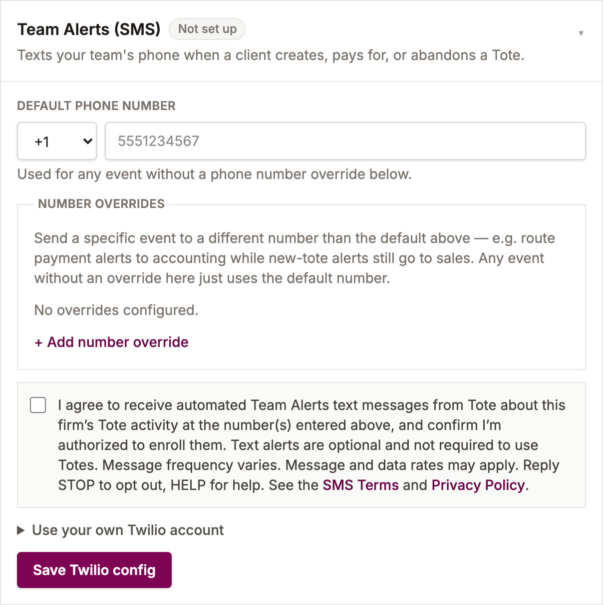

Team Alerts (SMS) is an optional feature inside Totes, a project/order platform for home-remodeling and interior-design firms. It lets a firm's own owner or staff receive text-message notifications about activity on that firm's own Totes account — it is not a consumer marketing program, and it never contacts a firm's customers.
1. What You're Signing Up For
When enabled by a firm, Team Alerts sends a short text message to the phone number that firm's owner or staff configured, whenever one of the following happens on their own Totes account:
- A new Tote (project cart) is created
- A customer completes payment on a Tote
- A customer rejects/removes items from a Tote
- A Tote has gone unpaid for an extended period (a stale-tote reminder)
Example message:
New tote created - Kitchen Remodel
https://your-firm.totesyes.com/totes/<id>
2. How You Opt In
Text alerts are optional. Consent to receive them is not a condition of using Totes or of any purchase — every other part of Totes works without them, and firms can choose Slack or email alerts instead, or no alerts at all.
To opt in, a firm's owner signs into their firm's own Totes admin dashboard, goes to Settings → Integrations → Team Alerts (SMS), enters the mobile number(s) that should receive alerts, and ticks a separate consent checkbox that is unchecked by default. The settings cannot be saved without ticking it. The checkbox reads:
“I agree to receive automated Team Alerts text messages from Tote about this firm’s Tote activity at the number(s) entered above, and confirm I’m authorized to enroll them. Text alerts are optional and not required to use Totes. Message frequency varies. Message and data rates may apply. Reply STOP to opt out, HELP for help. See the SMS Terms and Privacy Policy.”
Each time the settings are saved, Totes records who gave consent, when, and the version of the wording shown. The opt-in form looks like this:

3. Message Frequency
Frequency varies with a firm's own order volume — typically a handful of messages per week for a small firm, more for a busier one. Message and data rates may apply.
4. How To Opt Out
Reply STOP to any Team Alerts message to stop receiving texts at that number. You can also remove or change the number at any time from Settings → Integrations → Team Alerts (SMS) in the Totes admin dashboard. Reply HELP for help, or contact us using the details below.
5. Data Use
A phone number entered for Team Alerts is used only to deliver these notifications and is never sold, shared with third parties for marketing, or used to contact a firm's own customers. See our Privacy Policy for how Totes handles data generally.
6. Contact
- Email: howard@stoneypointsoftware.com